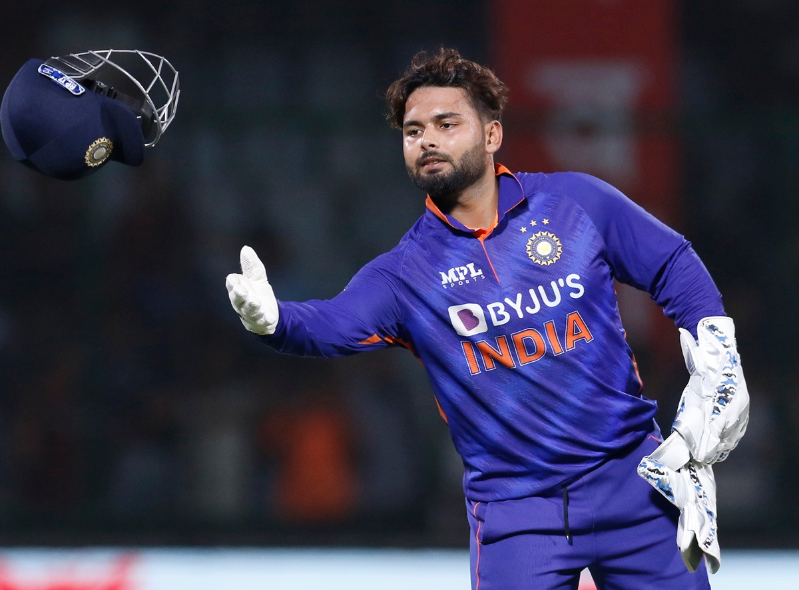
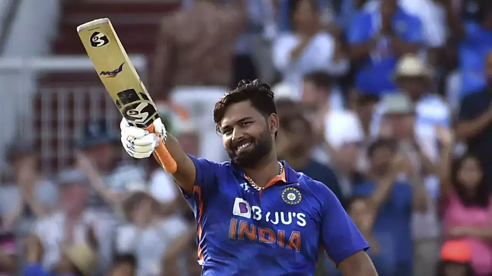

About
Rishabh Pant is a professional cricketer from India. He was born on October 4, 1997, in Haridwar, Uttarakhand. He is the son of Rajendra Pant and Saroj Pant. Pant is known for his explosive batting style and excellent wicket-keeping skills. He made his international debut in 2017 and quickly established himself as a key player in the Indian cricket team. Pant has played in all three formats of the game, representing India in Test matches, One Day Internationals (ODIs), and Twenty20 Internationals (T20Is).
Stats
| Format | Matches | Runs | Average |
|---|---|---|---|
| Test | 38 | 2448 | 43.29 |
| ODI | 61 | 1761 | 34.49 |
| T20I | 51 | 1284 | 29.19 |
Photos


Heroic Innings
- Rishabh Pant's heroic knock of 89* against Australia in the fourth Test at the Gabba in 2021 helped India secure a historic victory. Watch the highlights here.
- Pant's breathtaking innings of 101* against England in the fourth Test in 2021 played a crucial role in India's comeback victory. Watch the highlights here.
- In the IPL 2022, Rishabh Pant's match-winning knock of 78* off 36 balls led Delhi Capitals to victory over Mumbai Indians. Watch the highlights here.
Social Media
- Follow Rishabh Pant on Twitter: @RishabhPant17
- Follow Rishabh Pant on Instagram: @rishabpant
- Like Rishabh Pant's Facebook Page: Rishabh Pant